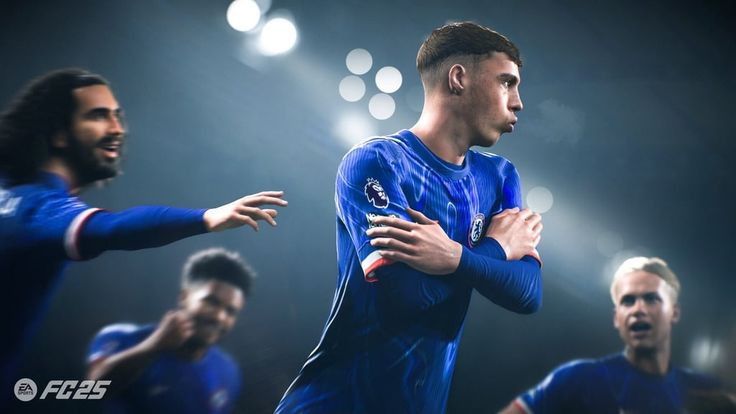
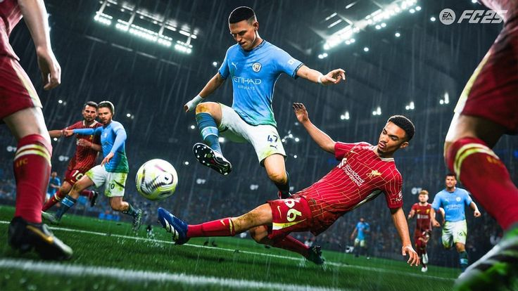

Football Ultimate Team™ 25
Football Ultimate Team
Elige tu artículo de futbolista favorito y juega en equipo con colegas en partidos de Rush de 5c5. Cambia tu estilo de juego con solo pulsar un botón gracias a los artículos de mánager y encuentra las sinergias perfectas entre los artículos de futbolista según los roles de futbolista concretos.

Football Ultimate Team™ 25
Realismo inigualable
Disfruta de un realismo inigualable en EA SPORTS FC™ 25 con la experiencia más realista de las competiciones, clubes y estrellas más importantes de todo el fútbol, con más de 19 000 futbolistas, 700 equipos, 120 estadios y 30 ligas. EA SPORTS FC™ 25 es el único lugar donde podrás jugar la emblemática UEFA Champions League, la UEFA Europa League, la UEFA Europa Conference League, la CONMEBOL Libertadores, la Premier League, la Bundesliga y LaLiga EA SPORTS en un mismo juego, además de la UEFA Women's Champions League, la Barclays Women's Super League, la D1 Arkema, la National Women's Soccer League y la Google Pixel Frauen-Bundesliga..

Football Ultimate Team™ 25
FC IQ
La actualización de los fundamentos tácticos del juego ofrece un mayor control estratégico y un movimiento en conjunto del equipo más realista. FC IQ también utiliza un nuevo modelo de IA, basado en datos reales, para influir en las tácticas de los jugadores mediante los nuevos roles de futbolista..